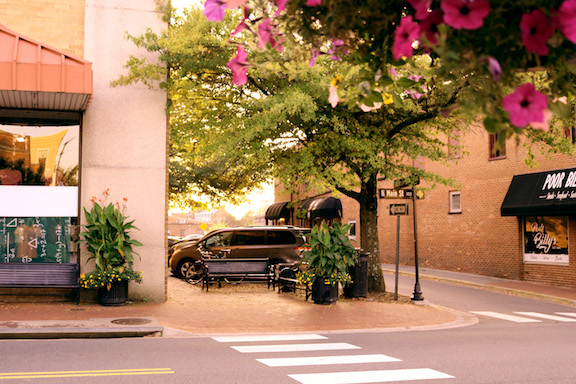

Drillfield Autumn Haze
Drillfield Autumn Haze was taken with the purpose of capturing the oranges and reds of Fall over one of Virginia Tech's icons - the drillfield. The trees were edited to be brighter and more colorful to heighten the contrast between them, the whitened sky, and dim grass.
Behind Blacksburg
Behind Blacksburg was shot in the area used for Wednesday and Saturday's Blacksburg Farmers Market. While the Farmers Market might not be a known staple to all of Blacksburg, the mural on the wall itself is sure to draw in locals and natives alike. Again, the photo was edited to portray bright Fall colors.
Blacksburg, USA
Taken outside the Blacksburg post office on Main Street, Blacksburg, USA portrays Fall orange colors reflecting off the brick wall that is the post office while making the American flag the center of attention.
Eerie Fall Evening
Eerie Fall Evening was taken in Oak Lane, the Greek community of Virginia Tech. Behind Oak Lane, there is a large field filled with some of Virginia Tech's horses. The photo is meant to portray a spooky end to the day with sparse trees and a few lonesome horses.
The Man, The Myth...
The Man, The Myth...was taken on Main Street and centers around the plaque of William Black, the founder of Blacksburg. The plaque was placed in the forefront of the picture to allow for the background of a Fall scene in Blacksburg.
Path to Virginia Tech
Path to Virginia Tech was taken at the beginning of the drillfield right above the start of the path leading to the academic side of campus. The image is enhanced with warm Fall colors for an inviting contrast.
Remembering Lane
Remembering Lane was taken as a tribute to the ending football season. With Lane Stadium in the background, but still the object of the photo, Hokies remember that the football team will be back soon enough for students, faculty, and alumni alike to start jumping.
Crisp Morning
Taken at the fence surrounding one of Blacksburg's many vast fields, Crisp Morning shows the chill of a Fall morning in the light blue sky, but the warmth that comes throughout the day in the warm tones of the grass just past the fence.
Hokie Sunset
Another Fall drillfield photo, Hokie Sunset was taken just as the sun was setting through the trees bordering the drillfield. The sun is gleaming with a bright but dark orange, known as burnt orange by Hokies.

N Main Tree
N Main Tree, named fittingly after the large tree that sits beside the N Main St sign, takes a small corner of Blacksburg and encompasses the beauty of the entire city. Filled with nature, warm and inviting tones, N Main Tree exemplifies all the warmth the quaint town of Blacksburg has to offer.
Walk Through
Two girls pictured taking a stroll down Main Street Blacksburg on a casual Monday morning. Walk Through portrays the quiet mornings the city of Blacksburg has to offer to its residents and visitors.
Black Dog Blacksburg
One thing is for sure, and that's the love people of Blacksburg have for their dogs. A black dog is pictured relaxing on a comfortable Fall day outside the London Underground, a local bar.
{kind=link}
{kind=link}
{kind=link}
{kind=link}
{kind=link}
{kind=link}
{kind=link}
{kind=link}
{kind=link}
{kind=link}
{kind=link}
{kind=link}